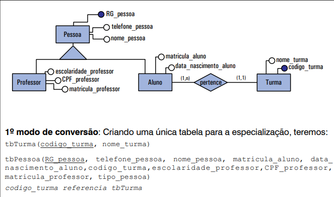
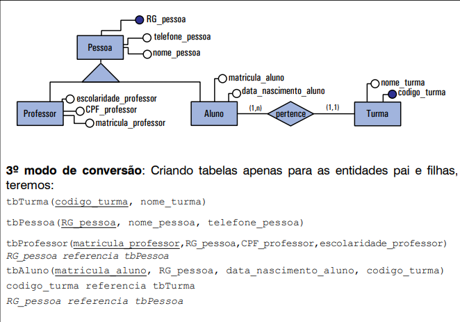
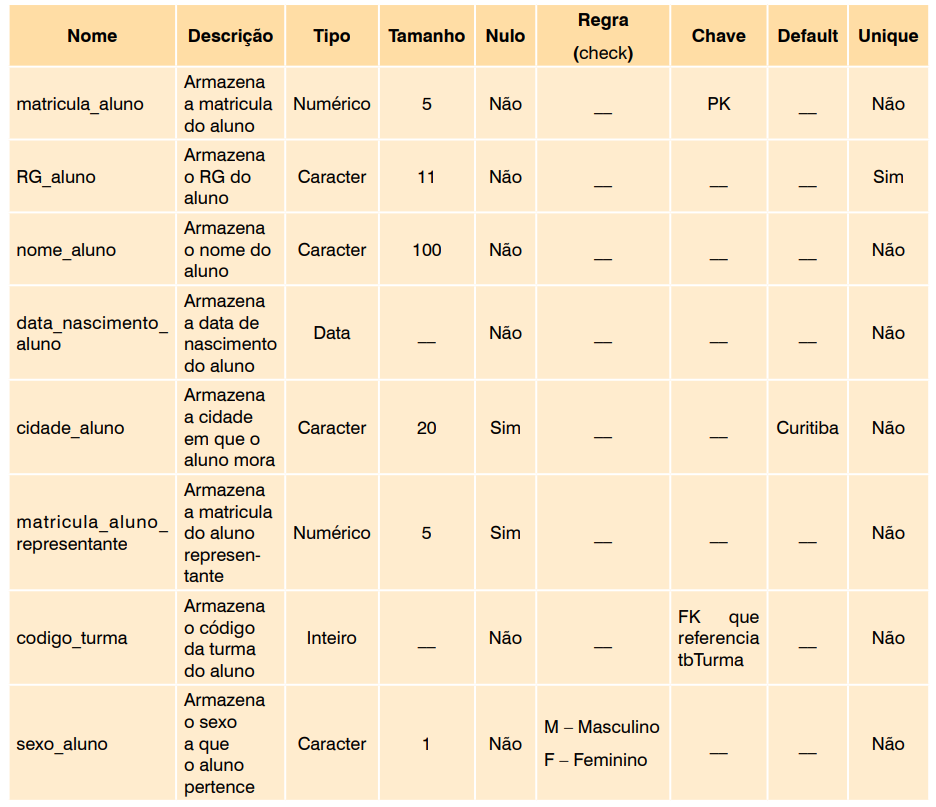
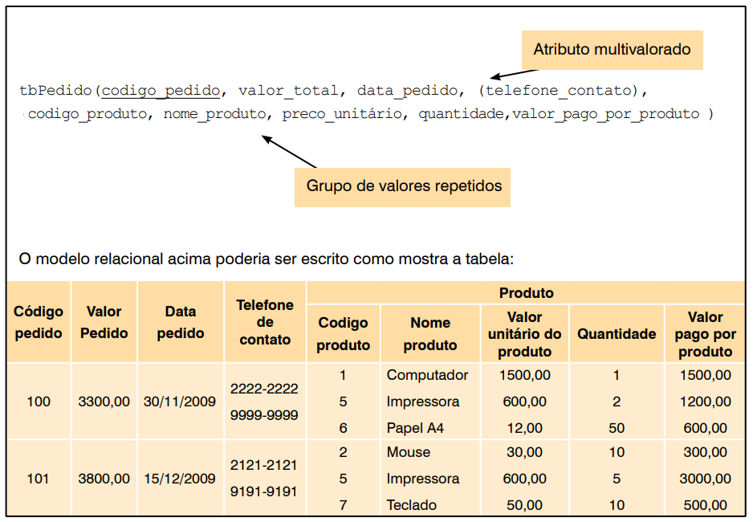
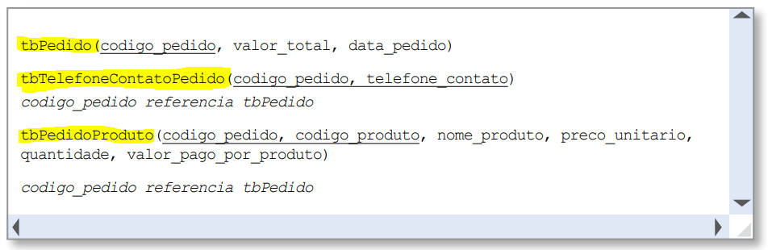

Aula 07 - Tópicos Avançados
- Especialização
- Dicionário de Dados (DD)
- Normalização: 1FN, 2FN, 3FN
- Atividades Práticas
Especialização
A transformação de uma especialização do modelo de ER para o modelo relacional pode ser feita de 3 diferentes modos:
Criando uma tabela apenas para a entidade pai;
Criando tabelas apenas para as entidades filhas;
Criando uma tabela para cada entidade (tanto para a entidade pai, quanto para as filhas).
Especialização
A transformação de uma especialização do modelo de ER para o modelo relacional pode ser feita de 3 diferentes modos:
Criando uma tabela apenas para a entidade pai;
Criando tabelas apenas para as entidades filhas;
Criando uma tabela para cada entidade (tanto para a entidade pai, quanto para as filhas).
Especialização
Criando uma tabela apenas para a entidade pai;
Especialização
Criando tabelas apenas para as entidades filhas

Especialização
Criando uma tabela para cada entidade (tanto para a entidade pai, quanto para as filhas)
Dicionário de Dados (DD)
É o "manual de instruções" do banco de dados. Um conjunto de metadados (dados sobre os dados) que descreve a estrutura lógica e física do banco.
Ele descreve em detalhes cada tabela, seus atributos, estruturas físicas e restrições. É essencial para a documentação e manutenção.
Objetivo: Garantir que o desenvolvedor que irá implementar o banco saiba exatamente como a base deve ser criada, quais restrições aplicar e o que cada campo significa.
Dicionário de Dados: Estrutura
Um DD detalha cada atributo de cada tabela, geralmente com as seguintes colunas:
- Nome do Atributo: O nome físico da coluna (ex: `matricula_aluno`).
- Descrição: O que o atributo armazena (ex: "Armazena a matrícula do aluno").
- Tipo: O tipo de dado (Numérico, Caracter, Data, Inteiro, etc.).
- Tamanho: O tamanho alocado (ex: `Caracter(100)`, `Numérico(5)`).
- Restrições: As regras aplicadas ao atributo.
Dicionário de Dados: Restrições
As restrições são a parte mais importante do DD:
- Nulo (Null): Define se o atributo é obrigatório (Não Nulo) ou opcional (Sim).
- Chave (Key): Identifica a Chave Primária (PK) e as Chaves Estrangeiras (FK), indicando qual tabela ela referencia.
- Regra (Check): Define um domínio de valores permitidos (ex: `turno` só pode ser 'Matutino', 'Vespertino', 'Noturno' ou 'Integral').
- Default (Padrão): Um valor padrão inserido se nenhum for fornecido (ex: `cidade_aluno` = 'Cedro').
- Unique (Único): Garante que não haja valores duplicados na coluna (ex: `RG_aluno` ou 'email_aluno'), mesmo que ela não seja a PK.
Dicionário de Dados: Exemplo
Analisando as restrições definidas para a `tbAluno`:
Figura 5.3 — Exemplo de Dicionário de Dados para `tbAluno` (Angelloti, Cap. 5).
Normalização
Muitos sistemas antigos (ou mal planejados) armazenam dados em "tabelões únicos" (como uma grande planilha do Excel), causando problemas graves:
- Redundância: Dados repetidos várias vezes (ex: o nome do cliente em cada produto que ele comprou).
- Anomalias de Inconsistência: Ao atualizar um dado (ex: endereço do cliente), pode-se esquecer de atualizar em todas as linhas, gerando inconsistência.
- Muitos valores nulos.
Normalização é um processo formal, passo-a-passo, para "limpar" a estrutura do banco, eliminando redundâncias e melhorando a integridade dos dados.
Normalização
Vamos analisar esta tabela `tbPedido`, que está "não normalizada".
Figura 5.4 — Tabela `tbPedido` não normalizada (Angelloti, Cap. 5).
Problemas visíveis:
1. Atributo Multivalorado: `(telefone_contato)` pode ter vários valores por pedido.
2. Grupo de Valores Repetidos: `(codigo_produto, ...)` é uma "tabela dentro da tabela".
Primeira Forma Normal (1FN)
Regra: Todos os atributos devem ser atômicos (indivisíveis). Uma tabela não pode conter atributos multivalorados ou grupos repetidos.
O que não é atômico?
- Atributos Compostos: Ex: `endereco` (deve ser quebrado em `rua`, `numero`, `bairro`...).
- Atributos Multivalorados: Ex: `telefone_contato`.
- Grupos Repetidos: Ex: A lista de produtos dentro do pedido.
Solução: Criar novas tabelas para os atributos multivalorados e grupos repetidos, ligando-as com a PK da tabela original.
Aplicando a 1FN
Para resolver os problemas da Fig 5.4, quebramos a tabela em três:
Figura 5.5 — Modelo após a 1FN (Angelloti, Cap. 5).
tbPedido: Contém apenas os dados do pedido.tbTelefoneContatoPedido: Trata o atributo multivalorado.tbPedidoProduto: Trata o grupo repetido como uma entidade associativa.
Segunda Forma Normal (2FN)
Regra: A tabela deve estar na 1FN; e todo atributo não-chave deve depender totalmente da chave primária composta.
A 2FN só se aplica a tabelas com PK composta.
Análise da tbPedidoProduto:
PK: (codigo_pedido, codigo_produto)
- quantidade: Depende da PK inteira (OK).
- nome_produto, preco_unitario: Dependem apenas de codigo_produto.
Isso é uma Dependência Parcial e viola a 2FN (causa redundância).
Solução: Mover os atributos parcialmente dependentes para uma nova tabela.
Aplicando a 2FN
Removemos a dependência parcial da tbPedidoProduto:
Figura 5.6 — Modelo após a 2FN (Angelloti, Cap. 5).
- Criamos
tbProdutopara armazenarnome_produtoepreco_unitario. tbPedidoProdutoagora só contém a FKcodigo_produtoe os atributos que dependem da PK completa (quantidade, etc.).
Terceira Forma Normal (3FN)
Regra: A tabela deve estar na 2FN; e nenhum atributo não-chave pode depender de outro atributo não-chave.
Isso é chamado de Dependência Transitiva.
Exemplo (Fig 5.7):
tbDepartamento(codigo_depto, nome_depto, codigo_gerente, nome_gerente)
- nome_gerente depende de codigo_gerente.
- codigo_gerente não é a PK (é um atributo não-chave).
PK → Atributo Não-Chave → Outro Atributo Não-Chave (Violação da 3FN!)
Solução: Mover a dependência transitiva para uma nova tabela.
Aplicando a 3FN
Removemos a dependência transitiva da tbDepartamento:
Figura 5.7 — Problema.
Figura 5.8 — Solução.
- Criamos
tbGerente(codigo_gerente, nome_gerente). tbDepartamentoagora só armazena a FKcodigo_gerente.
Resumo da Normalização
- 1FN: Elimina atributos não-atômicos (multivalorados, compostos, grupos repetidos).
"A chave" - 2FN: Elimina dependências parciais (atributos que dependem de parte da PK composta).
"A chave inteira" - 3FN: Elimina dependências transitivas (atributos não-chave dependendo de outros não-chaves).
"E nada mais que a chave"
Lembrete: "Os atributos devem depender da chave, da chave inteira, e de nada mais que a chave."
Atividade Prática: Questão 1
Dado tabela não normalizada de uma Nota Fiscal, aplique o processo de normalização (1FN, 2FN, 3FN) e escreva o esquema relacional resultante (indicando PKs e FKs).
Pistas:
1. (CodProduto...) é um grupo repetido (Viola a 1FN).
2. (NomeProduto, PrecoUnit) dependem só de CodProduto (Viola a 2FN).
3. (NomeCliente, EnderecoCliente) dependem só de CodCliente (Viola a 3FN).
Atividade Prática: Questão 2
Dado a tabela de Cursos de uma faculdade, aplique o processo de normalização (1FN, 2FN, 3FN) e escreva o esquema relacional resultante.
Pistas:
1. (CodDisciplina...) é um grupo repetido (Viola a 1FN).
2. (NomeDisciplina, CargaHoraria) dependem só de CodDisciplina (Viola a 2FN).
3. (NomeCoordenador, EmailCoordenador) dependem só de CodCoordenador (Viola a 3FN).
Dúvidas?
Discutam as soluções para as atividades práticas.
A normalização é a base para um banco de dados relacional eficiente, íntegro e livre de redundâncias.
Atenção:
1. Existem outras formas normais (BCNF, 4FN, 5FN), mas são menos comuns.
Por exemplo, a BCNF é uma versão mais rigorosa da 3FN.
2. A normalização pode ser "quebrada" em casos específicos para otimização (desnormalização).
3. Sempre documente as decisões de normalização no Dicionário de Dados. Os DDs devem refletir a estrutura final do banco.